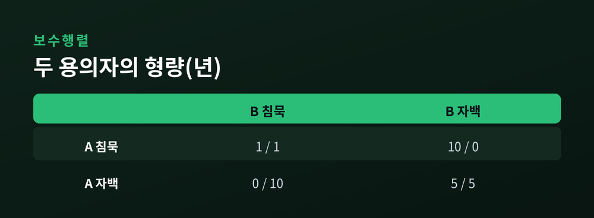
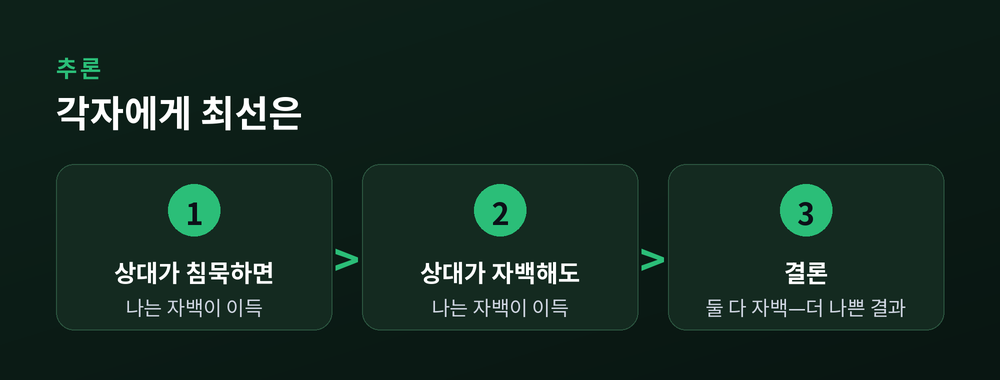
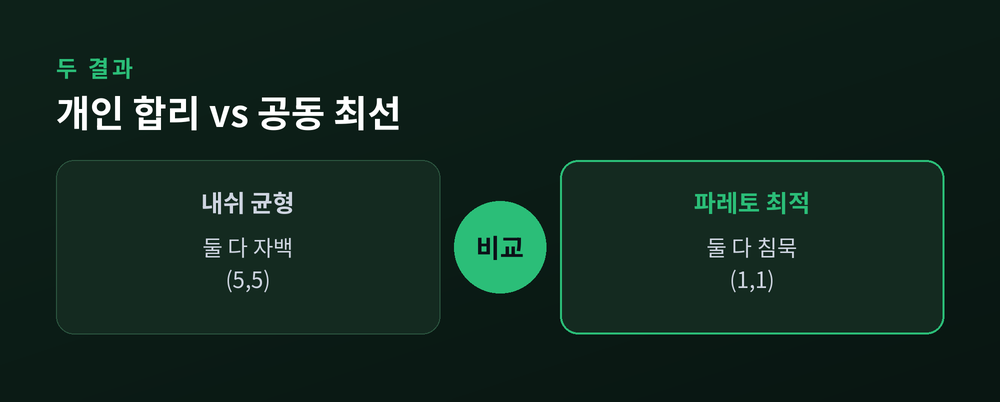
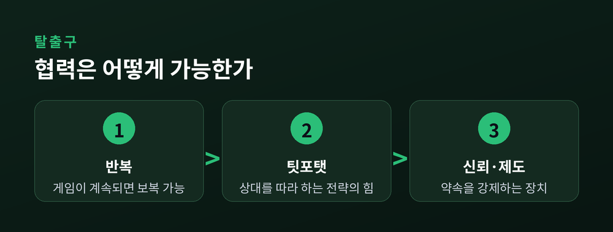

이번 글에서는 죄수의 딜레마와 내쉬 균형을 정리해 보겠습니다.
각자 똑똑하게 행동했는데 결과는 모두에게 나쁜, 그 이상한 구조를 따라가 봅니다.
게임이론의 출발점부터 현실의 가격 경쟁과 환경 문제까지 이어서 살펴보겠습니다.
게임이론은 여러 사람이 서로의 선택에 영향을 주고받는 상황을 분석합니다.
내 선택이 상대의 결과를 바꾸고, 상대의 선택이 내 결과를 바꿉니다.
바둑이나 협상, 기업의 가격 결정이 모두 여기에 들어갑니다.
예전에는 이런 상황을 각자의 심리나 도덕으로만 설명했습니다.
지금은 보수와 전략의 표로 옮겨 냉정하게 계산할 수 있습니다.
바로 그 계산의 언어를 만든 사람이 존 내쉬입니다.
그는 1950년, 스물두 살의 나이에 '내쉬 균형'이라는 개념을 정리했습니다.
비슷한 시기 RAND 연구소의 두 수학자 메릴 플러드와 멜빈 드레셔가 한 가지 실험을 설계합니다.
'합리적 계산이 늘 좋은 결과로 이어지지는 않는다'는 점을 보이기 위해서였습니다.
여기에 내쉬의 지도교수 앨버트 터커가 두 죄수의 이야기를 입혔습니다.
그렇게 '죄수의 딜레마'라는 이름이 붙었습니다.
이야기는 단순합니다.
공범으로 의심되는 두 사람 A와 B가 따로 조사를 받습니다.
서로 말을 맞출 수 없습니다.
선택지는 둘뿐입니다. 침묵할 것인가, 자백할 것인가.
검사의 제안은 이렇습니다.
한 명만 자백하고 상대가 침묵하면, 자백한 사람은 풀려나고 침묵한 사람은 10년을 삽니다.
둘 다 자백하면 각자 5년입니다.
둘 다 침묵하면 증거가 부족해 각자 1년에 그칩니다.
숫자로 옮기면 아래와 같습니다. 형량이니 작을수록 좋습니다.

A의 입장에서 차분히 따져 보겠습니다.
상대 B가 침묵한다고 가정합니다. 이때 나는 침묵하면 1년, 자백하면 0년입니다. 자백이 낫습니다.
이번엔 B가 자백한다고 가정합니다. 나는 침묵하면 10년, 자백하면 5년입니다. 역시 자백이 낫습니다.
상대가 무엇을 하든 나에게는 자백이 유리합니다.
이렇게 상대의 선택과 무관하게 늘 이득인 전략을 '우월전략'이라고 부릅니다.
A에게 자백은 우월전략입니다.
B도 똑같은 계산을 하니, B에게도 자백이 우월전략입니다.

두 사람이 모두 자백하면 각자 5년을 받습니다.
이 상태가 이 게임의 내쉬 균형입니다.
내쉬 균형은 이렇게 정의됩니다.
상대의 선택이 그대로일 때, 나 혼자 전략을 바꿔서는 결과를 더 좋게 만들 수 없는 상태입니다.
실제로 (자백, 자백)에서 A가 혼자 침묵으로 돌아서면 5년이 10년으로 늘어납니다.
B도 마찬가지입니다.
그래서 누구도 먼저 자리를 뜨지 않습니다.
기이한 점은 여기에 있습니다.
두 사람 모두 자기에게 가장 유리한 선택을 했습니다.
그런데 그 합리적 선택이 모인 결과는 두 사람 모두에게 나쁜 자리입니다.
내쉬가 보인 것은, 이런 균형이 예외가 아니라 흔하다는 사실이었습니다.
그의 이름을 딴 이 개념은 훗날 경제학의 표준 언어가 되었습니다.
둘 다 침묵했다면 각자 1년이었습니다.
둘 다 자백한 5년보다 분명히 낫습니다.
누군가를 손해 보게 하지 않고는 더 나아질 수 없는 상태를 '파레토 최적'이라 합니다.
(침묵, 침묵)이 바로 그 자리입니다.
문제는 그 좋은 자리가 균형이 아니라는 데 있습니다.
둘 다 침묵한 상태에서도 각자는 몰래 자백해 형량을 1년에서 0년으로 줄일 유혹을 느낍니다.
그래서 협력은 스스로 무너집니다.
내쉬 균형은 '나 혼자 후회할 선택을 했는가'를 묻습니다.
파레토 최적은 '우리가 함께 남겨둔 이득이 있는가'를 묻습니다.
죄수의 딜레마에서는 이 두 물음의 답이 어긋납니다.
개인의 합리성이 집단의 최선을 배반하는 것입니다.

이 구조는 감옥 안에만 있지 않습니다.
두 기업이 가격을 놓고 다툽니다.
둘 다 높은 값을 유지하면 모두 이윤이 좋습니다.
하지만 각자는 몰래 값을 내려 상대의 손님을 데려올 유혹을 느낍니다.
결국 둘 다 값을 내리고 이윤은 얇아집니다. 담합이 잘 깨지는 이유입니다.
광고도, 군비도 결이 같습니다.
경쟁사가 광고를 늘리면 나도 늘려야 하고, 상대가 무장하면 나도 무장해야 합니다.
서로 자제하는 편이 공동의 최선이지만, 그 약속은 오래가지 못합니다.
먼저 손을 내린 쪽이 손해를 보기 때문입니다.
가장 무거운 사례는 공유지의 비극입니다.
어장과 목초지, 맑은 대기처럼 함께 쓰는 자원이 있습니다.
각자 조금 더 챙기는 편이 합리적입니다.
그 합리적 선택이 모이면 남획과 오염으로 공동의 파국이 옵니다.
냉전기 미국과 소련의 핵무기 경쟁도 같은 얼굴을 하고 있었습니다.
둘 다 군축하는 편이 나았지만, 상대를 믿지 못해 둘 다 무장의 길로 갔습니다.
구조를 알아보면, 서로 다른 문제들이 실은 하나의 문제였음을 깨닫게 됩니다.
다행히 출구가 있습니다.
열쇠는 '단 한 번'이라는 조건을 깨는 데 있습니다.
게임이 여러 번 반복되면 계산이 달라집니다.
오늘 배신하면 내일 보복당할 수 있기 때문입니다.
미래의 그림자가 오늘의 협력을 붙잡습니다.
정치학자 로버트 액설로드가 1980년에 이를 실험으로 보였습니다.
그는 반복 죄수의 딜레마 프로그램 대회를 열었고, 여러 전략이 서로 200회씩 맞붙었습니다.
우승은 '팃포탯'이라는 가장 단순한 전략이었습니다.
첫 수는 협력하고, 그다음부터는 상대가 직전에 한 대로 그대로 따라 하는 규칙입니다.
액설로드가 꼽은 성공한 전략의 특징은 소박합니다.
먼저 배신하지 않고, 당하면 응징하되, 상대가 돌아오면 곧바로 용서합니다.
팃포탯은 상대를 이겨서 이긴 것이 아닙니다.
상대의 협력을 이끌어내서 이겼습니다.
다만 이것이 만능은 아닙니다.
팃포탯의 힘은 대회 설계와 보수 숫자에 기댄 면이 있습니다.
조건이 바뀌면 다른 전략이 더 나을 수 있다는 반론도 있기는 합니다.
그래서 현실에서는 반복만으로 부족할 때가 많습니다.
계약과 법, 규제와 국제 협약처럼 약속을 강제하는 제도가 함께 필요합니다.

정리하면 이렇습니다.
죄수의 딜레마는 어리석음의 이야기가 아닙니다.
오히려 각자가 지나치게 똑똑했기에 모두가 손해를 보는 이야기입니다.
개인의 합리성과 공동의 이익이 늘 같은 방향은 아니라는 사실.
그 불편한 진실을 이 작은 게임이 정확히 보여 줍니다.
“혼자만의 최선이 모두의 최선은 아니다.”
우리가 사는 세상에는 이런 딜레마가 곳곳에 숨어 있습니다.
직장에서도, 이웃 사이에서도, 나라와 나라 사이에서도 같은 표가 그려집니다.
그 함정을 알아보는 눈이, 협력을 설계하는 첫걸음이 되리라 생각합니다.